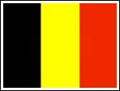

| Belgium's Eurovision Promotion Weekend 2011 |
|
The Easter Weekend 2011 is the weekend when the country of Belgium organises their annual Eurovision Promotion Weekend with the participation of this year's Eurovision Performers from Latvia, Romania and Slovakia. This particular weekend's programme is as follows:
Friday, 22 April 2011 - 2100 hours:
Eurovision de Luxe party in the city of Ghent with performances of HotelFM (Romania) and Musiqq (Latvia).
This is a rather closed party for the local Eurovision fans to meet and
great the performers ahead of the Eurovision Song Contest.
1200 hours:
Official Welcome and Reception at the City Hall of Ghent (Botermarkt 1 9000 Gent)
Only the Delegations (Belgium, Latvia, Romania and Slovakia) and Media will be admitted in the Ghent City Hall. After the official part there will be room for interviews with the performers. For interview requests Media is requested to register at the reception of the Ghent Town Hall as from 1140 hours.
1315 hours:
1430 hours:
1600 hours:
Open-Air Concert in the heart of Brussels on St-Katerinaplein (St. Katharina Square) where the Eurovision performers from Latvia (Musiqq), Romania (Hotel FM) and Slovakia (The TWiiNS) will not only perform their Eurovision entry but also a second song. After the concert there is another chance to meet and great the performers and do interviews, take photos, etc. The event is planned to finish at 1830 hours. For Accreditation Requests and further information please contact Olivier Vanhoutte via email at This e-mail address is being protected from spam bots, you need JavaScript enabled to view it or via phone at 0032 (0) 496 330 854. |
| < Prev | Next > |
|---|